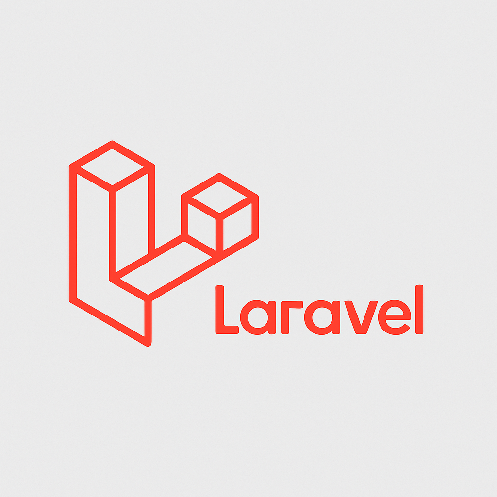

Introduction to Laravel
Laravel is a modern PHP web framework that follows the MVC pattern, offering expressive syntax, built-in tools for routing, authentication, and caching, and a thriving ecosystem with packages and extensions to accelerate web application development.